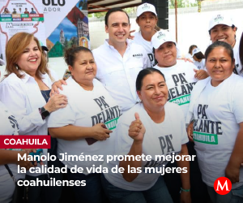
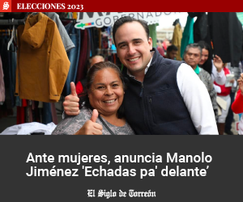

- México
- Mundo
- Elecciones
- Saltillo
- Coahuila
- Opinión
- Dinero
- Vida
- Show
- Deportes
- Semanario
- Newsletters

Seguridad y corrupción, los temas prioritarios del siguiente gobernador de Coahuila, según encuesta de Facebook
COAHUILA / 11 mayo 2023
En la carrera por la gubernatura hay cuatro aspirantes, el ex alcalde de Saltillo, Manolo Jiménez Salinas; el senador con licencia, Armando Guadiana Tijerina; el ex subsecretario de Seguridad Federal, Ricardo Mejía Berdeja y Lenin Pérez Rivera, ex alcalde de Acuña. VANGUARDIA
Recuerda que es muy importante que todos estemos informados y participemos en el proceso electoral, ya que nuestras decisiones tendrán un impacto directo en el futuro de nuestro estado. ¡No dudes en compartir tu opinión y hacer escuchar tu voz!
En Coahuila estamos en plena época electoral, pues el próximo 4 de junio se llevarán a cabo elecciones para elegir tanto a los diputados locales como al gobernador que dirigirá el rumbo del estado por los próximos 6 años.
En VANGUARDIA hemos querido conocer la opinión de nuestros lectores sobre cuáles son los problemas más urgentes que necesita atender el próximo gobernador de Coahuila. Por eso, hemos preguntado en nuestra página de Facebook: “¿Qué tema consideras prioritario para que atienda el próximo gobernador de Coahuila?”
En la carrera por la gubernatura hay cuatro aspirantes, el ex alcalde de Saltillo, Manolo Jiménez Salinas; el senador con licencia, Armando Guadiana Tijerina; el ex subsecretario de Seguridad Federal, Ricardo Mejía Berdeja y Lenin Pérez Rivera, ex alcalde de Acuña.
Por el lado de las diputaciones locales tenemos 80 aspirantes que pelearán por los 16 distritos en disputa bajo las siglas de dos alianzas partidarias (PRI-PANPRD y UDC-PVEM), además de solitarios en las fuerzas políticas Morena, Partido del Trabajo y Movimiento Ciudadano
Recuerda que es muy importante que todos estemos informados y participemos en el proceso electoral, ya que nuestras decisiones tendrán un impacto directo en el futuro de nuestro estado. ¡No dudes en compartir tu opinión y hacer escuchar tu voz!
Raúl Rodarte Leos comentó sobre la necesidad de implementar políticas públicas para el manejo del agua en cada región, así como la creación de un plan estratégico para fortalecer la seguridad y aprovechar al máximo las inversiones generadas en el estado. Asimismo, mencionó la importancia de bajar recursos federales para invertir en infraestructura, salud y desarrollo social.
Por su parte, Horacio Piñasanchez exigió cárcel para aquellos que endeudaron al estado, desfalcando el sindicato de maestros y distribuyendo el crico. Fabiola Carreón hizo hincapié en la necesidad de dejar de crear hospitales que no puedan ser respaldados por el gobierno federal y enfocar el presupuesto de salud en la prevención de enfermedades. Criticó la construcción de hospitales vistosos por fuera, pero insuficientes por dentro debido a la falta de recursos financieros.
Suscríbete y recibe las noticias del día antes que nadie
PUBLICIDAD
Lo más visto
2 personas reaccionaron
¿Cómo me siento acerca de este artículo?
Informad@
Inspirad@
Confundid@
Molest@
PUBLICIDAD
